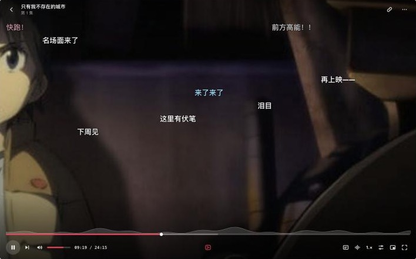

这是历史页面。2026-10-12 之后播放器换成了「画框」：控件放在画面外面，不再盖在视频上。下面的三个方向和「已选定 B · 胶囊岛」都只是当时的记录。现在的设计看 文档 9.4 播放器 · 画框，五种设计语言的控件对照看 播放器 · 画框。
9.4 播放器 · 重新设计
给播放器一个自己的样子
（已选定 B，见文末。）改版前的播放器是「上下两条黑色渐变 + 一根细进度条 + 一排图标」，和 YouTube、B 站、PotPlayer 几乎一模一样，盖住 logo 就认不出是谁家的。下面三个方向都只改我们自己画的那一层（进度条、控制条、中央反馈），功能和「一次点击 / 两次点击 / 侧面板」的分层不变。

现在- 形状、排布、渐变都是行业默认值，没有用到 Erika 已经定下来的任何东西：下划标注、胶囊、水手领三线、格子。
- 弹幕密度曲线是唯一的特色，但它是一条孤零零的灰色山脊，和进度条是两样东西。
- 番剧特有的结构（OP、A/B 部分、ED、预告）在进度条上看不出来。
A
标注
进度条本身就是一道「下划标注」：当前时间压在主题色胶囊上，和全 App 的文字强调是同一个形状。弹幕热度直接画成进度条的粗细。
控制层悬停进度条暂停看片时都可以直接点：播放、拖进度条、点 ☆、开关弹幕、发弹幕
签名
时间被「标注」出来
- 已播放的部分是一根主题色胶囊，当前时间骑在胶囊头上，胶囊压住字的底边、比字多出 0.4 个字宽，参数和文字强调完全一样。
- 弹幕越密，进度条越粗；最密的两处标 ☆，点一下跳过去。
- 进度条按 MKV 章节断开（序幕 / OP / A / B / ED / 预告），没有章节就是一整条。
排版
杂志式，去掉顶部黑条
- 片名和集数挪到左下角，水手领三线做引子，像一页杂志的标题。顶部只留两个角上的按钮，不再有整条渐变。
- 右侧的字幕、音轨、倍速直接写出当前值（简中、日语、1.0×），不用点开就知道状态。
- 「弹幕」开关用文字加下划标注表示开启，关掉时胶囊收回去。
动效 · 主题色 · 实现
胶囊头会弹
- 点击或拖动进度条，胶囊头连同时间用 bouncy 弹到新位置；悬停时章节名淡入，预览帧从 0.9 弹出。
- 主题色 3 处：进度胶囊、「弹幕」标注、发送按钮。
- 全部是形状和文字，任何平台都能画；需要 bern 提供文字宽度（和下划标注是同一个需求）。
B
胶囊岛 已选定
控制层是一颗浮在画面上的毛玻璃胶囊，其他东西都从它身上长出来：悬停进度条时向上长出预览，点字幕或倍速时长成选项卡，发弹幕时收窄变成输入框。
控制层悬停进度条字幕选项发弹幕看片时点字幕、1.0×、纸飞机试试形变
签名
一颗会变形的胶囊
- 没有任何黑色渐变，画面是三个方向里最干净的。
- 浮层不再从按钮旁边弹出，而是胶囊自己长高、变宽，同一个物体换形状。
- 左上角片名、右上角工具也是小胶囊，和 logo 的软糖高光同一种形状。
动效
果冻感最强
- 宽和高各用一个 jelly 弹簧，周期差 10%，变形时会轻轻抖一下。
- 隐藏时缩小下沉，出现时弹回。
- 主题色 3 处：进度、弹幕开启的小圆点、发送。
代价
浮层要自绘
- 选项卡是胶囊的一部分，不能用系统的 NSPopover / Flyout，需要 bern 支持自绘层上的毛玻璃和裁切。
- 所有按钮挤在一颗胶囊里，进度条只有约 400px，精确拖动比 A 差。
- 这种「浮岛」近两年苹果用得多，辨识度靠动效撑。
C
水手服
底部控制区是一块藏青色的「领子」，上缘三条白线就是水手领的三线，中间那条兼做进度条；播放头是一截主题色的领巾尾巴。
控制层悬停进度条拖动看片时拖动进度条，领巾会跟着甩
签名
一眼就是 JK
- 藏青领子 + 三条白线 + 红领巾，是三个方向里二次元味最重、最好认的。
- 领子表面带一层很淡的斜纹，和格子纹规格里的 45° 斜纹是同一层。
- 章节在三条线上一起断开，像领子的接缝。
动效
领巾会甩
- 控制区像抽屉一样从底部弹出。
- 拖动或跳转时，领巾尾巴按速度往后甩，再用 jelly 摆回来。
- 主题色 3 处：进度和领巾（算一处）、弹幕开关、发送。
代价
会挡住画面
- 领子是不透明的，控制层出现时会盖住画面最下面的 126px（字幕会被顶上去）。
- 藏青色和群青、荧绿主题色放在一起不如绯红好看。
- 离「二次元是布料，不是贴纸」那条线最近，看久了可能腻。
怎么选
| A 标注 | B 胶囊岛 | C 水手服 | |
|---|---|---|---|
| 辨识度 | ●●●●○ | ●●●○○ | ●●●●● |
| 画面干净 | ●●●●○ | ●●●●● | ●●○○○ |
| 动效存在感 | ●●●○○ | ●●●●● | ●●●●○ |
| 和现有规范一致 | 直接复用下划标注、水手领三线 | 胶囊形状一致；浮层要破例自绘 | 用到水手领三线和斜纹；领子算新增的大面积表面 |
| 实现成本 | 低：形状 + 文字 | 中：自绘浮层、毛玻璃裁切 | 低：形状 + 一个摆动弹簧 |
2026-10-12 选定 B · 胶囊岛。它的硬伤（胶囊挡在字幕的位置上）由「字幕让位」解决：控制层出现时，底部对白抬到胶囊上方。毛玻璃不依赖系统，由视频渲染器自己画，五个平台都能做。交互原型和文档 9.4 节已经换成这一版，手机横屏用同一颗胶囊，功能和桌面一致。这一页留作记录。